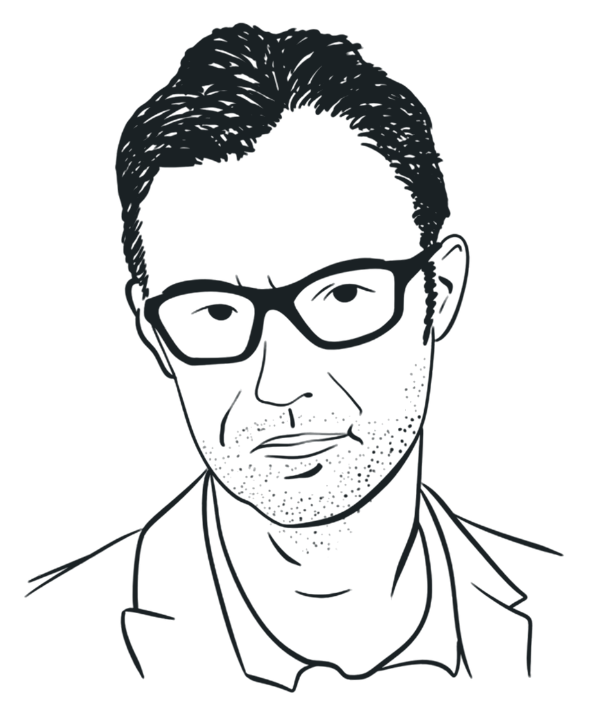
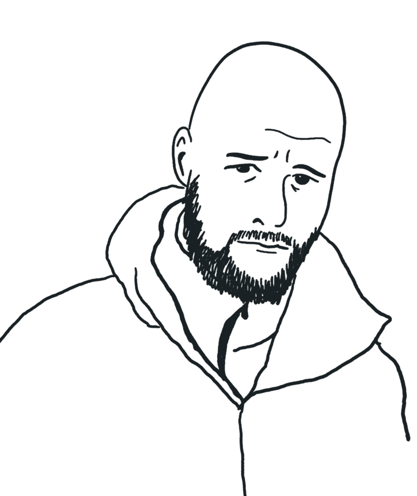
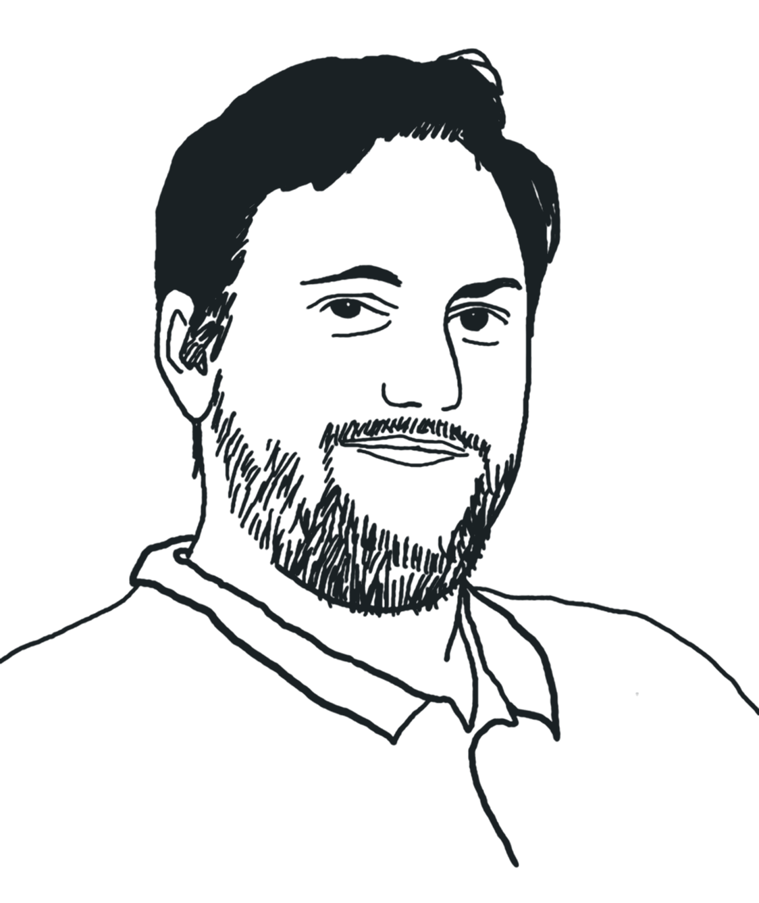
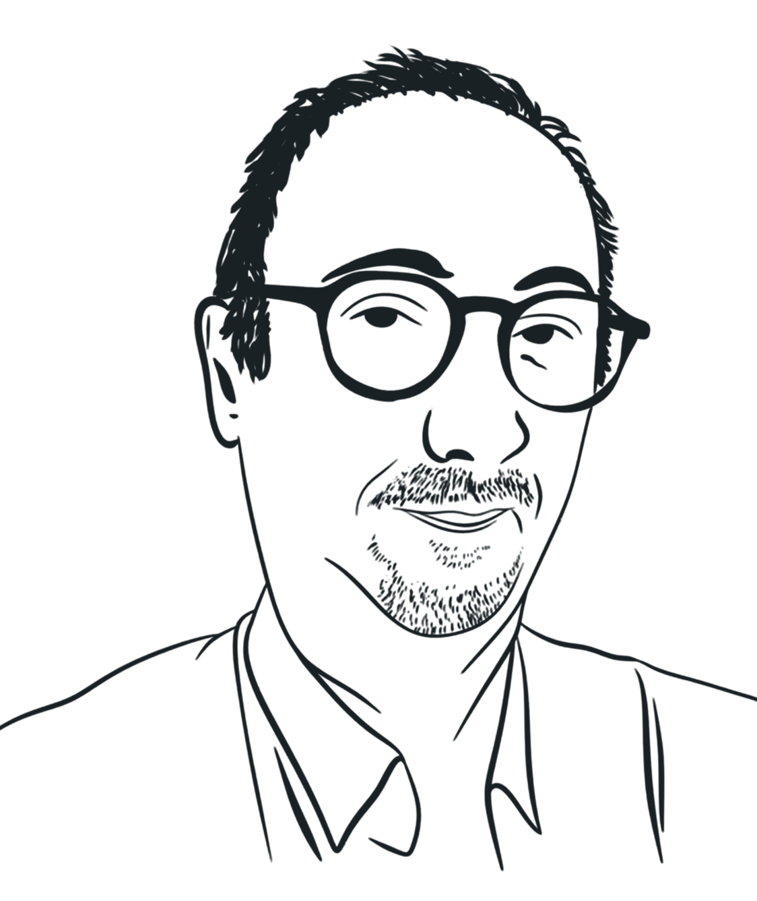
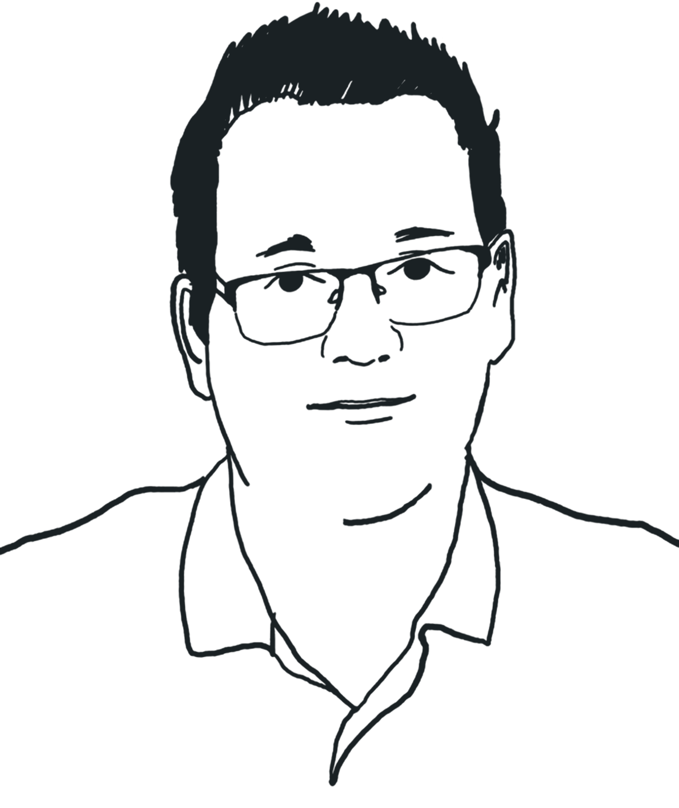

Cabinet de conseil en durabilité
Réduire les impacts environnementaux des structures scientifiques
Nous accompagnons les laboratoires de chimie analytique dans leur transition environnementale en alliant rigueur scientifique et pragmatisme.
Pourquoi Le Labo Durable ?
La chimie analytique, comme toutes les activités humaines, n'échappe pas aux défis environnementaux. Son impact est encore trop peu documenté, à l'inverse de la chimie organique, déjà au cœur des débats.
Composé de docteur·es et d'ingénieur·es passionné·es, Le Labo Durable privilégie la vision long terme, l'implication de tous les niveaux organisationnels et la prise en compte des contraintes terrain : un pragmatisme ambitieux en somme.
Notre mission
Embarquer les structures scientifiques dans la lutte contre la crise environnementale et les accompagner afin de répondre aux attentes de la société en termes d'engagements et d'actes.
« S'engager est le meilleur moyen de faire évoluer son activité »

Christophe Pérès, fondateur
Nos valeurs
- Engagement
Dans nos accompagnements et nos pratiques
- Partage
Des connaissances, expertises et expériences
- Rigueur
Scientifique et méthodologique, sans greenwashing
- Détermination
Pour aller plus loin ensemble et relever les défis
Qualiopi (via Analytiss)
Agréé CIR
Partenaire ADEME
Membre du CIFL
Trois pôles pour transformer votre laboratoire
Un accompagnement pluridisciplinaire unique, porté par 3 pôles d'expertise : expertise analytique & instrumentation ; durabilité, ACV & bilans GES ; chémo-informatique & IA.
Expertise analytique & instrumentation
- Conseil en stratégies analytiques
- Audit de performance
- Maintenance instrumentale
- Matériel reconditionné
Durabilité, résilience & criticité
- ACV ISO 14040/44
- Bilans GES / Bilan Carbone®
- Éco-conception de méthodes
- Pilotage des consommations
Chémo-informatique & IA
- Traitement de données labo
- Solutions algorithmiques
- Bases de données sur mesure
- Formations spécialisées
De la mesure d'impact au déploiement opérationnel
Diagnostic & mesure d'impact
Bilans GES, ACV, audits environnementauxNous accompagnons les organisations dans la compréhension de leurs enjeux, par l'identification, la mesure et l'analyse de leurs impacts environnementaux.
Conseil stratégique
Stratégie et feuille de routeNous guidons les organisations dans la formalisation de leurs engagements en matière d'atténuation de leurs impacts, par la construction d'une stratégie et d'une feuille de route adaptées.
Déploiement opérationnel
Plan d'actions, financement, suiviNous sommes aux côtés des organisations dans le déploiement, le financement et le suivi de leur plan d'actions, ainsi que l'intégration des enjeux dans leurs métiers et pratiques.
Conduite du changement
Communication, sensibilisation, formationNous accompagnons les organisations dans le déploiement d'actions de communication, de sensibilisation et de formation, et dans la valorisation de leurs engagements.
Expertise analytique & maintenance
Instruments reconditionnés, économie circulaireSourcing et déploiement d'instruments analytiques reconditionnés, contrats de maintenance, extension de durée de vie des équipements de laboratoire. Réparation et économie circulaire appliquée.
Chémo-informatique & algorithmie
Données analytiques, algorithmes génétiquesAccompagnement dans la gestion des données analytiques, algorithmes génétiques, traitement du signal pour les laboratoires.
Notre équipe
Docteur·es et ingénieur·es passionné·es, nous combinons chimie analytique, ACV et chémo-informatique pour transformer les laboratoires.
Rencontrer l'équipe- Christophe PérèsFondateur, pôle méthodes & instrumentation

Bastien RaccaryResponsable pôle durabilité, ACV & stratégie low impact
Clément TruanResponsable pôle chémo-informatique & IA
Xavier RouessacResponsable support & formation, expert LC/GC/MS
Thomas VandewattyneExpert chémo-informatique, doctorant IA appliquée
Des pratiques engagées au quotidien
Notre politique environnementale structure nos actions autour de 3 axes et 6 engagements concrets.
- Transports bas carbone
Priorisation train et vélo, regroupement des RDV par zone géographique, visioconférence systématique. 61 % de nos km parcourus en train en 2025.
- Télétravail encouragé
Réduction des déplacements quotidiens et de l'empreinte carbone associée. Recrutement régional priorisé pour réduire les distances domicile-client.
- Numérique responsable
Achat de matériel informatique reconditionné uniquement (sauf irréparabilité), extension de garantie, réparation prioritaire.
- Éthique & loyauté
CDI favorisés, rémunération des stagiaires dès le 1er jour, écart salarial de 1 à 3 maximum. Confidentialité stricte sur les données clients (RGPD).
- Formation continue
Fresques, myCO₂, ateliers. Sensibilisation régulière des collaborateur·ices aux enjeux environnementaux. Formations 100 % accessibles PMR.
- Alimentation responsable
Pas de viande ni de poisson lors de nos workshops et événements. Alternatives végétales systématiquement proposées.
Notre bilan GES 2025
~1,15 tCO₂e par personne. 85 % de notre empreinte provient des déplacements, principalement liés au transport de matériel analytique volumineux.
Objectif 2028 : 3,80 tCO₂e (−40 %), zéro avion dès 2027
Détail par poste
Émissions 2025, en tCO₂e et en part du total
Total6,34 tCO₂e · 100 %
85 % de notre empreinte carbone est liée aux déplacements, principalement la voiture pour le transport de matériel analytique volumineux (HPLC, GC-MS). L'avion représente le second poste malgré un usage limité.
Répartition des déplacements
Distances parcourues en 2025, en km et en part du total
Total72 040 km · 100 %
La majorité de nos déplacements est effectuée en train. La voiture reste nécessaire pour le transport de matériel analytique volumineux (HPLC, GC-MS) : chaque trajet combine livraison et récupération d'instruments.
Rejoignez le mouvement
Vous souhaitez engager votre laboratoire dans une démarche durable ? Parlons-en.